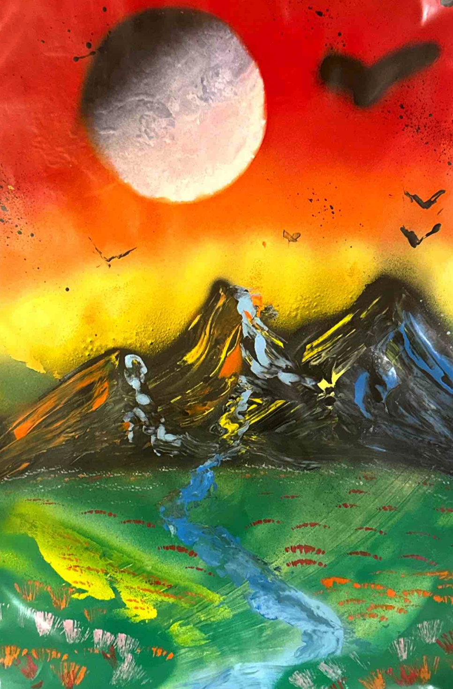
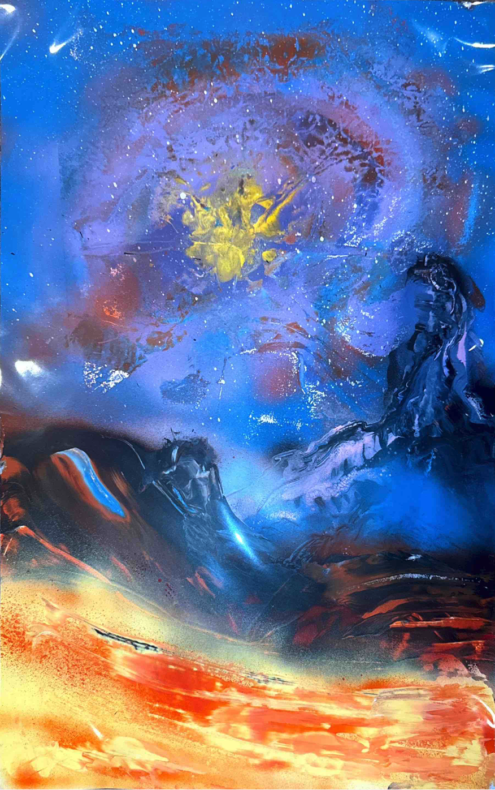
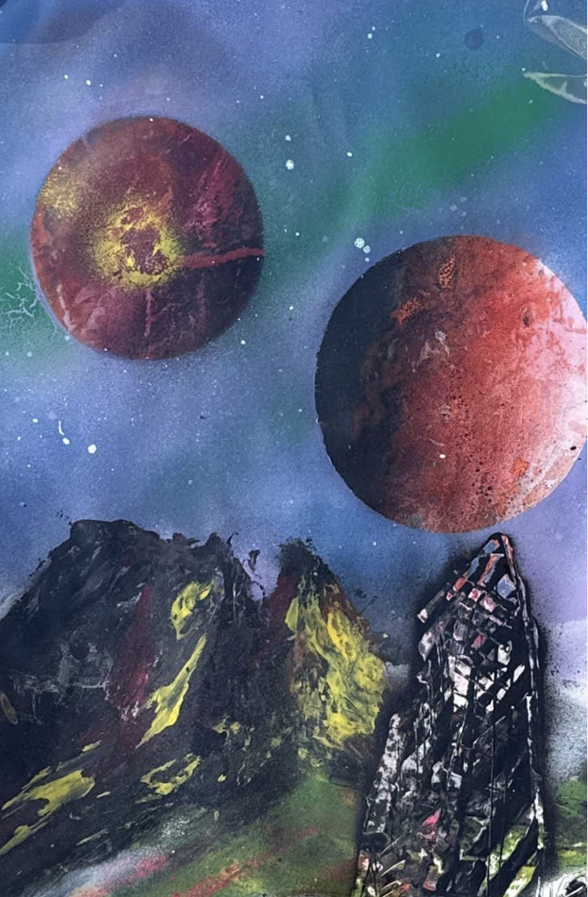
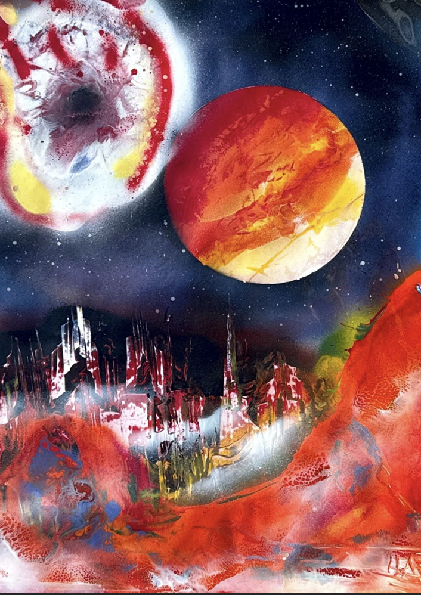
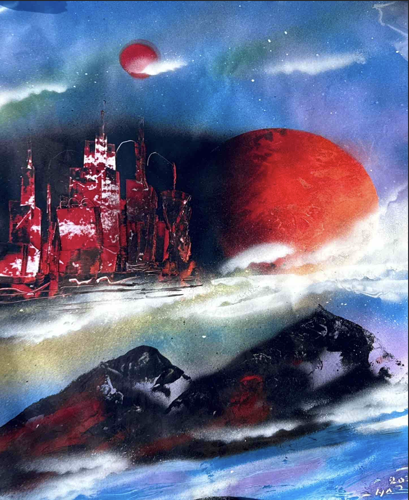

Demo
Music Recommendation System
A machine learning recommendation pipeline combining Spotify features and Last.fm listening histories to model user taste and recommend personalized music.
I build projects that combine machine learning, mathematical systems, and visual storytelling. My work explores how structure and creativity intersect.
Selected Work
A machine learning recommendation pipeline combining Spotify features and Last.fm listening histories to model user taste and recommend personalized music.
Simulation and visualization of nonlinear dynamical systems including the Lorenz attractor.
View CodeThis visualization shows how songs organize in an asymmetry-based embedding space. Clusters represent structural uniqueness rather than simple genre similarity.
Creative Work
A selection of six spray paint pieces exploring atmosphere, motion, and texture.






Contact